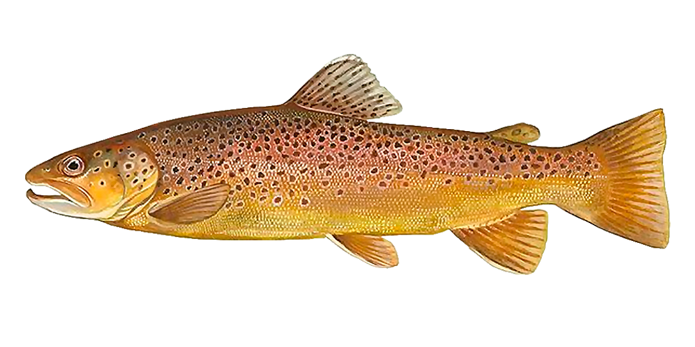
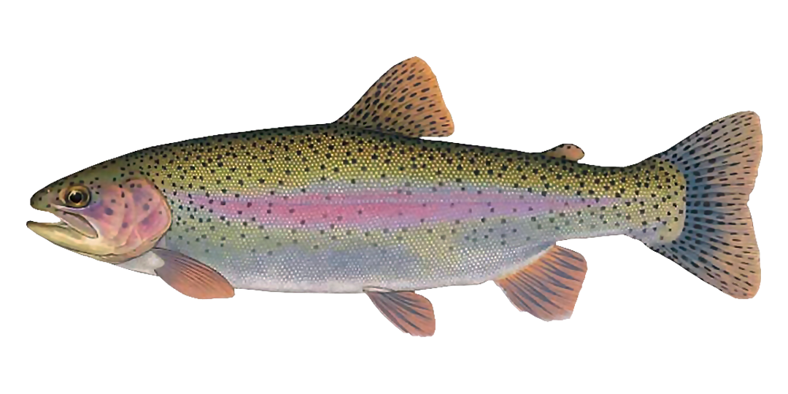
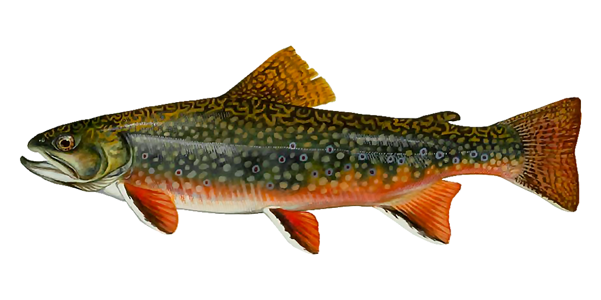

Truchas de Mendoza
Trucha Marron

Color dorado profundo, marrón y una panza blanca o de color crema.
Grandes manchas oscuras y rojas cubren su espalda, hacia los lados del cuerpo.
La cola tiene muy pocas manchas, lo que la distingue de las truchas Arcoíris y Fontinalis.
Tienen un sentido muy desarrollado de la vista y la audición,
con filas de dientes afilados y puntiagudos dándole un guiño a su naturaleza carnívora.
Trucha Arcoiris

También llamada trucha de banda roja, es un pez precioso, con coloraciones y patrones que varían ampliamente dependiendo del hábitat y la edad.
Tienen forma de torpedo y generalmente son de color verde azulado con una veta rosada a los costados.
De vientre blanco y pequeñas manchas negras en la espalda y aletas.
Trucha Fontinalis

De cuerpo largo y aerodinámico.
Las variaciones de color incluyen olivo, gris azulado o negro arriba con vientre blanco.
Tienen manchas rojas rodeadas de aureolas azules en sus lados.
Las aletas inferiores tienen un borde frontal blanco seguido de negro y el resto son de color naranja rojizo.